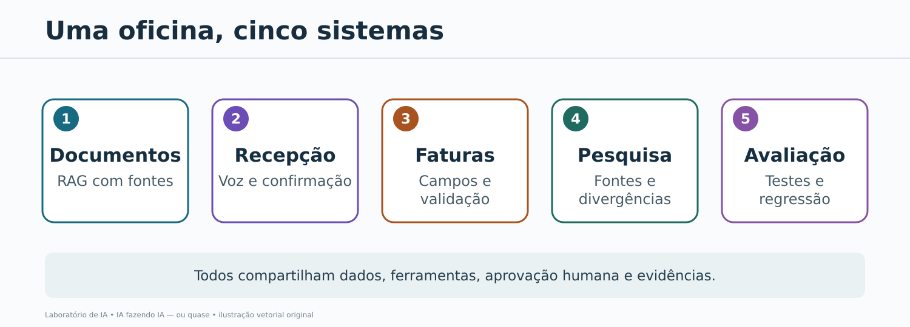
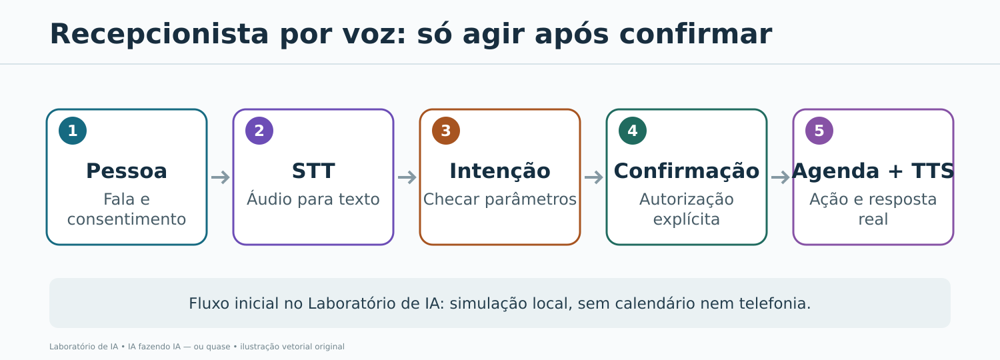
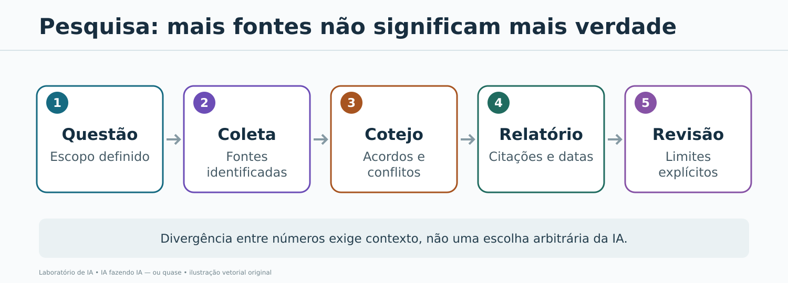
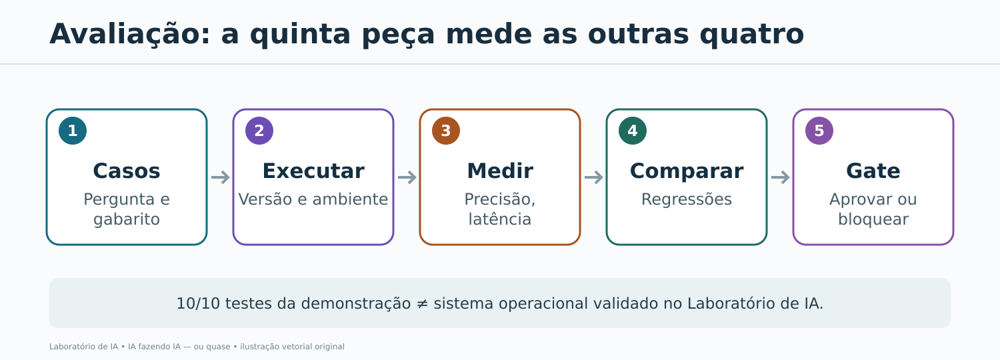

Complemento técnico do livro IA fazendo IA — ou quase. Edição pública, sem inventários, credenciais ou configuração de laboratório privado.
Vídeo didático: https://youtu.be/P2hft-BH0qA
O vídeo de origem (2min27s, formato vertical) afirma que conectar uma interface a uma API de LLM não basta para construir aplicações de IA úteis. Ele organiza o aprendizado em cinco projetos: (1) assistente de documentos, (2) recepcionista por voz, (3) processamento de faturas, (4) pesquisa com múltiplas fontes e (5) avaliação de sistemas. O final insiste em dados, recuperação, ferramentas, validação e testes, mais importantes que uma demonstração bonita.
Nossa adaptação: construir uma única oficina no laboratório de IA com componentes reaproveitáveis, checkpoints e provas de cada etapa. Não é uma tradução literal do narrador. Não representa endosso do autor original e não reproduz seus desenhos ou personagens.
Escopo público: este material apresenta uma arquitetura reproduzível e ensaios com dados artificiais. Não descreve equipamentos, endereços, configurações, armazenamento ou serviços particulares. A instalação em uma máquina física permanece pendente.
| Proposta | O que o vídeo ilustra | O que a implementação realmente exige |
|---|---|---|
| Documentos com RAG | carregar páginas, recuperar trechos e citar origem | ingestão, extração, indexação, controle de versão/permissões, métricas de recuperação e verificação de citações |
| Recepção por voz | chamada → texto → LLM → calendário → fala | reconhecimento de fala, interpretação, tool calling, integração com agenda, confirmação, tratamento de falhas e consentimento |
| Processar faturas | documento → campos estruturados | extração de texto/OCR quando necessário, esquema, validação de datas/valores, revisão humana e trilha de auditoria |
| Pesquisa | consultas a várias fontes, relatório e conflitos | proveniência, data e autoria, recuperação múltipla, comparação verificável, indicação de desacordo e revisão |
| Plataforma de avaliação | perguntas de teste, modelos, pontuação por versão | conjunto de teste rotulado, métricas distintas, custo/latência, regresão, rastreabilidade e gates de aceite |
Os ícones de ferramentas no vídeo são exemplos, não uma lista de requisitos. RAG não obriga usar banco vetorial: nosso LAB-RAG-01 utiliza SQLite/FTS5 como caminho inicial. A recuperação de trechos não valida automaticamente a resposta final. Uma avaliação com poucas questões não prova qualidade geral.

Componentes compartilhados: arquivos autorizados e suas versões; adaptadores de entrada (texto, PDF, áudio); buscador lexical e, se justificar, vetorial; modelo local opcional; conectores de ferramentas isolados; esquema estruturado de saída; avaliação regressiva; logs sem segredos; aprovação humana para ações com efeito.
Os requisitos de processamento e armazenamento dependem dos modelos escolhidos. Antes de executar componentes pesados, medir CPU, RAM, armazenamento e, quando houver, aceleradores; evitar execução simultânea sem aferição de capacidade.
Em uma instalação própria, execute os comandos abaixo somente com autorização e registre o resultado localmente. Não publique a saída dos comandos:
python3 --version
# Ferramentas específicas de GPU são opcionais e devem ser executadas apenas quando aplicáveis
python3 lab.py diagnostico
Registrar localmente data, requisitos mínimos e estado de execução, sem anexar logs privados ao repositório. Gate G0: sistema operacional e acesso autorizados, armazenamento confiável e nenhum procedimento de instalação que modifique drivers sem plano de reversão. Com discos reaproveitados, o SMART e testes de superfície têm precedência sobre RAID. Não expor Ollama, bases e interfaces na internet pública sem autenticação e isolamento.
LAB-RAG-01. Vetores e rerankers são aprimoramentos a justificar por testes.Exemplo da oficina: buscar informações de diagnóstico no manual fictício do computador didático. Não considerar o texto de teste um circuito real nem recomendar reparos sem documentação técnica e medições físicas.

faster-whisper, após verificar dependências, CUDA/driver e desempenho.Primeiro gate: diálogo inteiramente simulado, sem telefone, sem calendar API e sem gravações persistidas. O comando python3 lab.py voz "Quero marcar uma visita" não cria eventos.

O protótipo usa uma fatura fictícia e somente verifica estrutura; não reconhece layouts arbitrários, não executa OCR e não se conecta ao sistema financeiro.

O ensaio local apenas compara números de duas fontes fictícias (30 e 60 dias). Números diferentes não são prova de contradição contextual; podem ser versões ou casos distintos.

Uma avaliação confiável separa pelo menos quatro medidas:
| Medida | Pergunta | Evidência |
|---|---|---|
| Recuperação hit@k | A fonte esperada apareceu entre as k primeiras? | conjunto de perguntas com fonte rotulada |
| Qualidade factual | A afirmação foi sustentada pela fonte? | comparação e inspeção de trechos |
| Segurança de ações | Foi pedido consentimento? Houve efeitos não autorizados? | logs de simulação e testes de falha |
| Operação | Quanto tempo, CPU/RAM/VRAM e custo consumiu? | telemetria reproduzível por versão |
Amostra funcional já criada: três questões sintéticas, com hit@2 = 1,0 nesta sessão, e dez testes de unidade passando no núcleo local. Isto não prova desempenho da IA: é apenas um teste da implementação lexical e dos dados artificiais. O próprio ensaio precisa crescer com casos negativos, conflitos e documentos difíceis.
| Gate | Entrega | Critério de saída | Situação |
|---|---|---|---|
| G0 | linha de base do laboratório de IA | inventário e acesso remoto reproduzível | pendente: computador real |
| G1 | protótipo Python | testes locais e dados fictícios | 10/10 PASS no ensaio de autoria (dados fictícios) |
| G2 | RAG integrado | reutilizar LAB-RAG-01, citar e abster | pendente de integração |
| G3 | pesquisa multi-fonte | identificar divergências com origem | parcial: demo lexical |
| G4 | leitura de faturas | extrair, validar, revisar | parcial: arquivo de exemplo |
| G5 | fluxo de voz | STT → confirmação → TTS | parcial: simulação de intenção |
| G6 | QA contínuo | avaliação antes de cada versão | parcial: conjunto inicial sintético |
Ordem recomendada: G0 → G1 → G2 + G6 → G3 → G4 → G5. É prudente medir primeiro modelos leves e evitar cinco serviços pesados simultâneos.
No repositório, entre em laboratorio/cinco-sistemas-ia/ e rode:
python3 -m unittest discover -s testes -v
python3 lab.py diagnostico
python3 lab.py documentos "Qual o prazo de reembolso?"
python3 lab.py voz "Quero marcar uma visita"
python3 lab.py fatura
python3 lab.py pesquisa
python3 lab.py avaliar --saida saida/avaliacao.json
Todos os comandos são locais. Não é necessário instalar bibliotecas externas para rodar os exemplos. Veja o README do projeto para os critérios de conferência.
Complemento público: complementos/cinco-sistemas-ia-laboratório de IA/ conterá este caderno, seis SVGs editáveis e links cruzados com RAG, ferramentas e avaliações, seguindo o padrão existente no GitHub.
Código: laboratorio/laboratório de IA-cinco-sistemas/ poderá conter os exemplos e testes de dados fictícios, sem resultados privados, tokens e binários pesados.
Vídeo didático: versão em português publicada no YouTube: https://youtu.be/P2hft-BH0qA. O repositório contém o link, não uma cópia do MP4. Não subir MP4 diretamente ao repositório.
VID-20261120-WA0022.mp4, duração 2m27s. A análise foi feita por amostras sequenciais de imagens e legendas visíveis. Não foi produzida transcrição verificada palavra a palavra da locução original.Nada é “funcionou” sem prova. Simplicidade é força. Isole e meça antes de adivinhar. Não reinvente a roda. E cresçam juntos.